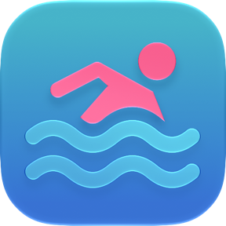
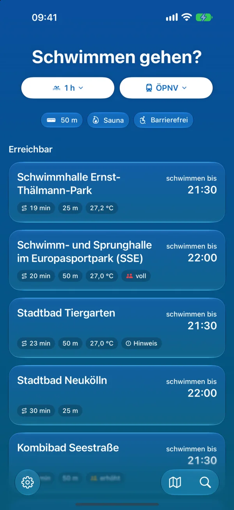
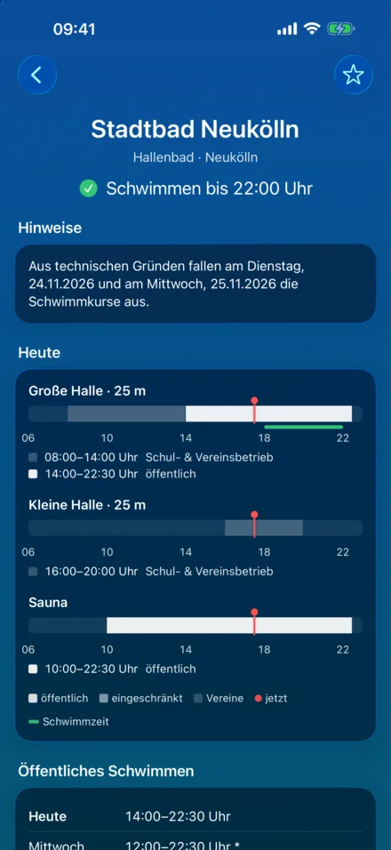
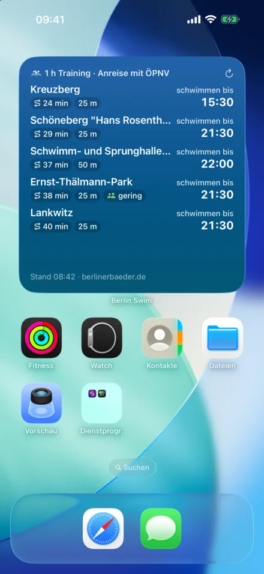

Welches Bad ist jetzt geöffnet? · Which Berlin pool is open now?
Inoffizielle iPhone-App mit Widget: Zeigt dir welche Berliner Bäder jetzt offen sind und ob du es noch rechtzeitig fürs Training dorthin schaffst. Daten von berlinerbaeder.de, ohne Gewähr.
Unofficial iPhone app and widget showing which Berlin public pools are open right now and whether you can still make it for a proper swim.


